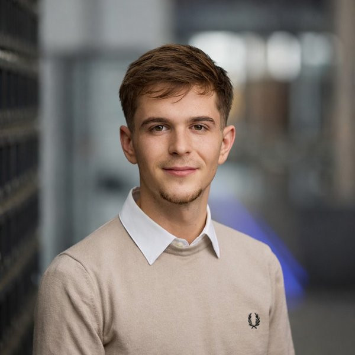
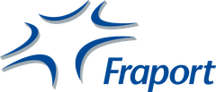
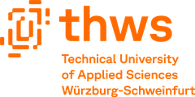
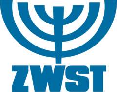

BWL-Student an der THWS mit Praxiserfahrung im Marketing der Fraport AG. Mich interessiert, wie Unternehmen Kunden binden und Veränderung erfolgreich gestalten – von Loyalitätsprogrammen bis Change Management.

Ich studiere Betriebswirtschaft an der THWS mit den Schwerpunkten Change Management sowie Marketing mit Fokus auf KI und Digitalisierung. Bei der Fraport AG habe ich im Marketing gearbeitet und meine Bachelorarbeit zur Optimierung des Miles & More Loyalitätsprogramms am Frankfurter Flughafen geschrieben.
Mich reizen Aufgaben, bei denen Analyse und Menschen zusammenkommen: Daten auswerten, daraus konkrete Empfehlungen ableiten und Veränderungen so gestalten, dass sie im Alltag auch ankommen. Am liebsten in Digitalisierungs- und Change-Projekten.
Neben dem Studium arbeite ich seit Jahren praktisch mit, in der Logistik, in der Produktion und seit über zehn Jahren ehrenamtlich in der Kinderbetreuung. Das hat mir gezeigt, wie Arbeit an der Basis funktioniert.
Werkstudentenstelle oder studentische Aushilfe in Marketing, Change oder Digitalisierung.

„Optimierung des Miles & More Loyalitätsprogramms im Retail-Bereich des Flughafen Frankfurt“. Analyse und Ableitung von Optimierungs- und Handlungsempfehlungen.
Schwerpunkt Miles & More. Mitarbeit an Marketing- und Optimierungsprojekten.

Schwerpunkte: Change Management sowie Marketing mit Fokus auf KI & Digitalisierung.

Seit über zehn Jahren ehrenamtlich als Betreuer bei Kinderfreizeiten: Gruppen leiten, Programme gestalten und Verantwortung für Kinder übernehmen.
Praxisprojekt im Marketing-Schwerpunkt der THWS im Wintersemester 2026/27 mit der WVV. Ziel: mehr Spenderinnen, Spender und Vereine für die regionale Spendenplattform „Zusammen für Mainfranken“. Unser Team entwickelt ein neues Key Visual und Kampagnen über App-Push, Plakat, Radio und Social Media, die zum Jahresvoting im Dezember live gehen. Grundlage sind eine Benchmark-Analyse vergleichbarer Plattformen und messbare Ziele, etwa 30 % mehr Besuche auf der Plattform.
Bachelorarbeit bei der Fraport AG: Analyse und Optimierung des Loyalitätsprogramms im Retailbereich am Frankfurter Flughafen. Bewertet mit 1,3.
Praxisprojekt an der THWS im Sommersemester 2026 mit der Unternehmensberatung CONLAB: ein Funnel, der aus kalten Kontakten planbar Erstgespräche macht. Über LinkedIn-Outreach und LinkedIn Ads, einen ROI-Kalkulator als Lead-Magnet, automatisierte E-Mail-Strecken und eine Landingpage zur Terminbuchung. Als stellvertretender Projektleiter habe ich LinkedIn Ads und die Abstimmung mit dem Auftraggeber verantwortet.
Praxisprojekt im Schwerpunkt Business Transformation & Change Management: ein Konzept, das die Wirksamkeit von Change Management über Qualitätskriterien und KPIs messbar macht. Präsentiert beim Forum Change Connect.
Laufendes Praxisprojekt im Team zu der Frage, wie Wissen im Unternehmen geteilt und gesichert werden kann. Ich verantworte die Teilgruppe Workshop: Motive und Hürden beim Wissensteilen, Methoden zur Wissenssicherung und das Testen eines digitalen Tools.
Ob Praktikum, Projekt oder einfach Austausch – ich freue mich über deine Nachricht.